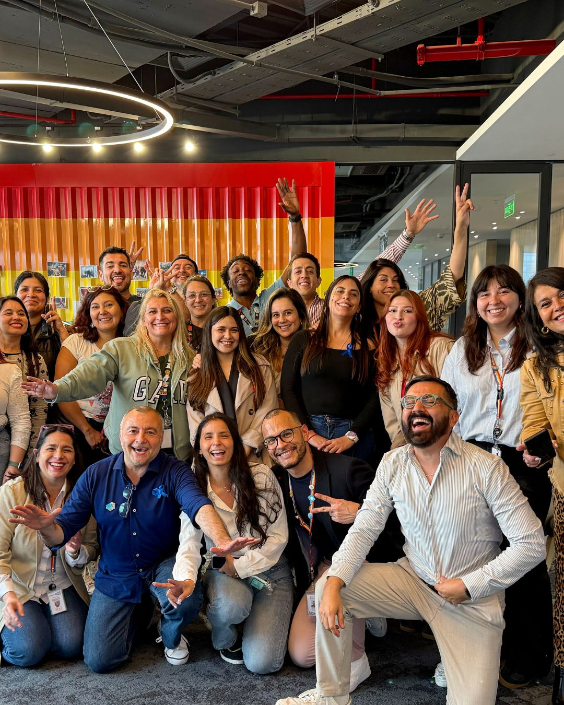

Conferencias
Ideas que abren conversaciones reales
Espacios de alto impacto para mover consciencia, criterio y decisión.
Sabes mucho. Pero saber no siempre cambia tu vida.
Aquí trabajamos en convertir conciencia en conducta. Para personas que quieren transformarse de verdad y para empresas que necesitan que el cambio se note en la realidad.
Si vienes desde el mundo personal, aquí encontrarás psicoterapia, coaching y BetaGym.
Si vienes desde el mundo organizacional, aquí encontrarás procesos para entrenar liderazgo, ejecución, conversaciones difíciles y cultura observable.
Y si todavía no sabes qué necesitas, BetaScan te ayuda a mirar con más claridad tu punto de partida.
Muchas personas entienden perfectamente lo que les pasa y aun así repiten.
Muchas empresas saben exactamente qué hacer y aun así no logran que eso ocurra en la realidad.
El cambio real aparece cuando algo se entrena, se sostiene y se vuelve conducta observable.
Eso es exactamente lo que construimos aquí.